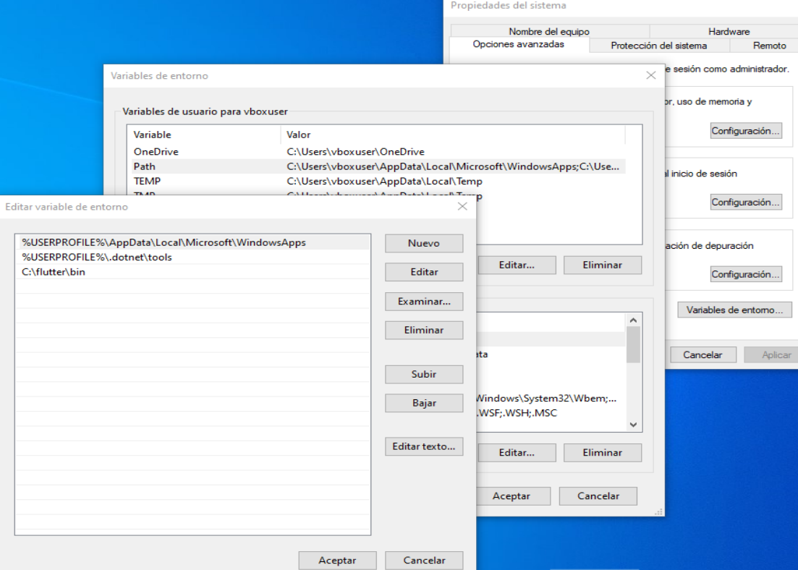
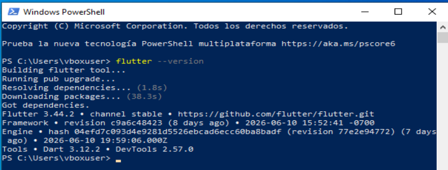
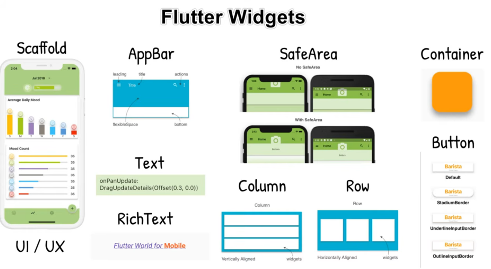
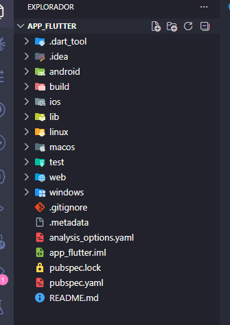

Instalación, Dart básico
y tu primer widget
Hoy nadie sale sin Flutter corriendo en su máquina. Instalamos herramientas, aprendemos lo esencial de Dart escribiendo código real, y cerramos con una pantalla interactiva: un botón que cambia un mensaje en pantalla.
1 Instalación y extensiones de VS Code
45 minutos · todos deben terminar antes de avanzarAntes de tocar una línea de Dart, dejen el entorno listo. Sigan este orden exacto para evitar errores de configuración:
Paso 1. Descargar Flutter SDK. Entren a https://docs.flutter.dev/install/manual. Hagan clic en Download Flutter SDK, descarguen el archivo oficial y descomprímanlo en una ruta corta como C:\src\flutter o D:\flutter. No lo dejen en Downloads, Desktop, OneDrive ni dentro de Program Files.
Paso 2. Agregar Flutter al PATH (Windows). El PATH es la lista de carpetas donde Windows busca los programas que escriben en la terminal. Si la carpeta bin de Flutter no está en esa lista, el comando flutter no se reconoce. Sigan estos pasos:
- Ubiquen la ruta correcta. Abran en el Explorador la carpeta donde descomprimieron Flutter y entren a bin; dentro deben ver los archivos flutter y flutter.bat. Hagan clic en la barra de direcciones y copien la ruta, por ejemplo
C:\src\flutter\binoD:\flutter\bin. Ojo: al descomprimir a veces queda una carpeta doble (C:\src\flutter\flutter\bin); copien la ruta real donde está flutter.bat. - Abran las variables de entorno. Presionen la tecla Windows, escriban variables de entorno y abran "Editar las variables de entorno del sistema". En la ventana Propiedades del sistema, pestaña Opciones avanzadas, hagan clic en el botón Variables de entorno... (abajo a la derecha).
- Editen el Path del usuario. En el recuadro de arriba, Variables de usuario para su-nombre, seleccionen la fila Path y hagan clic en Editar.... Si no existe una fila Path, usen Nuevo..., pongan como nombre Path y como valor la ruta copiada.
- Agreguen la ruta. En la ventana Editar variable de entorno, hagan clic en Nuevo, peguen la ruta con
Ctrl+Vy presionen Enter. Debe terminar en \bin. No borren ni modifiquen las otras líneas que ya existen. - Guarden. Hagan clic en Aceptar en las tres ventanas (Editar variable, Variables de entorno y Propiedades del sistema). Si cierran con la X, el cambio no se guarda.
- Comprueben. Cierren todas las terminales y VS Code (las ventanas que ya estaban abiertas no ven el cambio). Abran una terminal nueva (PowerShell o CMD) y ejecuten
flutter --version. La primera vez puede demorar uno o dos minutos porque Flutter termina de preparar sus herramientas. Si responde con la versión de Flutter y de Dart, el PATH quedó bien.
Si aparece "flutter no se reconoce como nombre de un cmdlet" o "no se reconoce como un comando interno o externo": revisen que la ruta termine en \bin, que no tenga la carpeta doble y que hayan abierto una terminal nueva. En PowerShell pueden ejecutar where.exe flutter: si muestra la ruta de flutter.bat, Windows ya lo encuentra.
Paso 3. Instalar VS Code. Descárguenlo desde https://code.visualstudio.com/Download. En Windows, elijan User Installer de 64 bits; en Mac, la versión estable para Apple Silicon o Intel según su equipo. Instalen con las opciones por defecto y abran VS Code al terminar.
Paso 4. Instalar Android Studio para tener Android SDK y emulador. Descárguenlo desde https://developer.android.com/studio. Instalen con la configuración estándar. Luego abran More Actions → SDK Manager y verifiquen que estén instalados Android SDK, Android SDK Platform-Tools y Android SDK Command-line Tools. Después entren a Device Manager y creen un emulador, por ejemplo un Pixel con una imagen reciente de Android. Si prefieren usar un teléfono físico, igual necesitan este paso porque Flutter usa el SDK y las herramientas de Android aunque no trabajen con emulador.
Paso 5. Instalar las extensiones de VS Code. Ya dentro de VS Code, abran Ctrl+Shift+X, escriban Flutter e instalen la extensión publicada por Dart Code. Confirmen que también aparezca instalada Dart. Las demás extensiones de abajo son apoyo, pero esas dos son obligatorias.
Paso 6. Verificar todo en terminal. Abran una terminal nueva y ejecuten flutter doctor. Si aparece una advertencia sobre licencias de Android, ejecuten flutter doctor --android-licenses y acepten todo con y. Recién cuando Flutter y VS Code estén en verde, sigan con la práctica.

C:\flutter\bin. No creen una variable nueva llamada flutter; la ruta debe quedar dentro de Path.
flutter --version. Si aparece la versión de Flutter y Dart, el comando ya fue reconocido correctamente.Alternativa al emulador: también pueden usar un teléfono Android real. Activen Opciones de desarrollador y Depuración USB, conéctenlo por cable, autoricen la computadora y verifiquen con flutter devices. Si quieren ver la pantalla del teléfono en la PC durante la clase, pueden usar Vysor; sirve para mostrar y controlar el equipo, pero no reemplaza el Android SDK.
Extensiones necesarias en VS Code
Abran la pestaña de Extensiones (Ctrl+Shift+X / Cmd+Shift+X) e instalen, en este orden:
Verificación rápida: antes de seguir, confirmen que las extensiones Flutter y Dart aparezcan instaladas. Las dos marcadas "OBLIGATORIA" son indispensables; las "RECOMENDADA" se pueden instalar después si el tiempo aprieta.
Crear el proyecto del curso desde cero
Con Flutter y VS Code listos, creen su primer proyecto. Para tener todo ordenado durante el ciclo, usaremos una carpeta de trabajo fija: D:\flutter_curso\2026_2. Dentro de ella irá un proyecto por cada práctica; el de hoy se llamará app_flutter.
Importante: no ejecuten flutter create . directamente dentro de 2026_2. Flutter usa el nombre de la carpeta como nombre del proyecto, y ese nombre solo puede tener minúsculas, números y guion bajo, y no puede empezar con número. "2026_2" empieza con número y da el error "is not a valid Dart package name". Por eso el proyecto va en una subcarpeta con nombre válido: app_flutter, mi_app, sesion1_app. Eviten espacios, tildes, eñes y guiones (-).
Opción A: desde la terminal (PowerShell o la terminal de VS Code). Pueden usar PowerShell de Windows o la terminal integrada de VS Code: abran VS Code y presionen Ctrl+ñ (o Terminal → New Terminal). En Windows esa terminal también es PowerShell, así que los comandos son los mismos. Ejecútenlos uno por uno:
1. Crear la carpeta de trabajo (si ya existe, el comando avisa y no pasa nada):
2. Entrar a la carpeta:
3. Crear el proyecto. Puede tardar uno o dos minutos la primera vez; esperen el mensaje "All done!":
4. Entrar al proyecto recién creado y abrirlo en VS Code:
Si ya estaban en la terminal de VS Code, pueden usar code -r . en lugar de code .: abre el proyecto en la misma ventana en vez de abrir una nueva.
5. Con el proyecto abierto en VS Code, abran la terminal integrada (Ctrl+ñ). Debe estar ubicada en D:\flutter_curso\2026_2\app_flutter. Ejecuten la app de ejemplo en el navegador:
Si code . no se reconoce, abran VS Code manualmente y usen File → Open Folder... para seleccionar D:\flutter_curso\2026_2\app_flutter.
Opción B: desde VS Code, sin terminal.
1. Primero creen la carpeta D:\flutter_curso\2026_2 desde el Explorador de Windows (clic derecho → Nuevo → Carpeta).
2. En VS Code presionen Ctrl+Shift+P, escriban Flutter: New Project y presionen Enter.
3. Elijan Application.
4. Se abre una ventana para escoger la carpeta: seleccionen D:\flutter_curso\2026_2 y hagan clic en Select a folder to create the project in.
5. Escriban el nombre app_flutter y presionen Enter. VS Code crea el proyecto y lo abre solo, con lib/main.dart a la vista.
6. Abran la terminal integrada y ejecuten flutter run -d chrome para comprobar que la app de ejemplo funciona.
Resultado esperado en el disco:
Para las próximas sesiones: vuelvan a D:\flutter_curso\2026_2 y creen un proyecto nuevo con otro nombre, por ejemplo flutter create sesion2_app. Así cada práctica queda separada y no pisan el trabajo anterior.
📱 Paso a paso: ejecutar la app en un emulador Android
Si quieren probar la app como aplicación móvil real, sigan esta secuencia completa.
1. Abran Android Studio.
2. Entren a Device Manager.
3. Si todavía no existe un emulador, creen uno. Una opción simple es un Pixel con una imagen reciente de Android.
4. Enciendan el emulador con el botón Play y esperen a que termine de arrancar por completo.
5. En la terminal del proyecto ejecuten:
6. Verifiquen que aparezca un dispositivo parecido a emulator-5554. Ese nombre identifica al emulador activo.
7. Ejecuten la app directamente en ese emulador con:
8. Si prefieren que Flutter muestre la lista de dispositivos y les pida elegir, usen:
9. Si el emulador no aparece en la lista, revisen que siga encendido y ejecuten:
Regla práctica: usen Chrome o Edge para avanzar más rápido en las primeras pruebas, y usen el emulador Android cuando quieran validar el comportamiento como app móvil real.

flutter run -d chrome: la app de ejemplo abre en una pestaña del navegador. Es la forma más rápida de probar en clase.
flutter run -d emulator-5554: la misma app, como app móvil.2 Dart básico, escribiendo en vivo
60 minutos · código en vivo + ejercicios cada 15–20 minEn este bloque todavía no hay pantallas: escribiremos Dart "puro" y veremos los resultados con print() en la terminal. Para no tocar la app, usaremos un archivo de práctica aparte dentro del mismo proyecto app_flutter.
Preparar el archivo de práctica
1. Abrir el proyecto. En VS Code debe estar abierta la carpeta D:\flutter_curso\2026_2\app_flutter. En el panel izquierdo (Explorador, Ctrl+Shift+E) deben ver las carpetas android, lib, test, web...
2. Crear el archivo. Hagan clic derecho sobre la carpeta lib → New File... y escriban el nombre dart_basico.dart, luego presionen Enter. Debe quedar al lado de main.dart:
3. Escribir una primera prueba. Dentro de dart_basico.dart escriban esto y guarden con Ctrl+S:
void main() {
print('Hola Dart desde VS Code');
}4. Abrir la terminal. Abran la terminal integrada con Ctrl+ñ (o Terminal → New Terminal). Verifiquen que la ruta que aparece sea la del proyecto: PS D:\flutter_curso\2026_2\app_flutter>. Si no lo es, escriban cd D:\flutter_curso\2026_2\app_flutter.
5. Ejecutar el archivo. Escriban este comando y presionen Enter:
Si aparece el mensaje, todo funciona: lo que pongan dentro de print() se mostrará en la terminal. La primera ejecución puede tardar unos segundos; las siguientes son más rápidas.
6. Ciclo de trabajo para cada ejemplo. Borren el contenido de dart_basico.dart, escriban el nuevo ejemplo, guarden con Ctrl+S y en la terminal presionen la flecha ↑ para repetir el último comando, luego Enter. Escribir → guardar → ejecutar → leer la salida.
Errores comunes: usen dart run, no flutter run: este último ejecuta la app de main.dart, no su archivo de práctica. Cada archivo solo puede tener una función main(); si pegan un ejemplo debajo de otro sin borrar el anterior, aparecerá "'main' is already declared". Si no guardan antes de ejecutar, la terminal mostrará el resultado de la versión anterior.
Otra forma de ejecutar: encima de void main() la extensión de Dart muestra los enlaces Run | Debug. Al hacer clic en Run, el resultado del print aparece en la pestaña DEBUG CONSOLE (no en TERMINAL). Si no tienen VS Code a mano, pueden practicar los mismos ejemplos en DartPad (dartpad.dev) desde el navegador.
Variables y tipos
void main() {
String nombre = 'Ana'; // texto
int edad = 21; // número entero
double estatura = 1.65; // número decimal
bool esEstudiante = true; // verdadero o falso
print('$nombre tiene $edad años'); // interpolación con $
}Cambien el valor de nombre y edad, guarden con Ctrl+S y vuelvan a ejecutar dart run lib/dart_basico.dart para ver el cambio en la terminal. Deben ver algo como Ana tiene 21 años. Esta práctica introduce la idea de "cambio de estado → cambio visible" que usarán durante todo el curso.
Null safety en una frase: en Dart, una variable normal nunca puede quedar "vacía" (null) a menos que se lo permitas explícitamente con String? nombre. El ? es Dart preguntando "¿esto puede no tener valor?".
Comentarios, constantes y lectura del código
void main() {
// Esto es un comentario: Dart lo ignora al ejecutar.
var contador = 1; // var: puede cambiar
contador = 2; // ✅ permitido
final horaInicio = DateTime.now(); // final: se conoce AL EJECUTAR
const diasSemana = 7; // const: se conoce AL ESCRIBIR el código
print('Contador: $contador');
print('Hora de inicio: $horaInicio');
print('Días de la semana: $diasSemana');
// horaInicio = DateTime.now(); ❌ final no se puede volver a asignar
// diasSemana = 8; ❌ const tampoco
// const otraHora = DateTime.now(); ❌ la hora no se sabe antes de ejecutar
}Hora de inicio: 2026-11-11 13:42:40.666144
Días de la semana: 7
¿Qué tienen en común? final y const sirven para valores que no cambian: una vez asignados, no se pueden volver a asignar. Si intentan hacerlo, VS Code lo marca en rojo antes de ejecutar.
¿En qué se diferencian? En el momento en que se conoce el valor:
const: el valor ya está escrito en el código y se sabe antes de ejecutar el programa.diasSemanasiempre vale 7, hoy y mañana.final: el valor se conoce recién cuando el programa se ejecuta, y desde ahí queda fijo.horaInicioguarda la hora del momento en que corren el programa: si lo ejecutan dos veces, sale una hora distinta cada vez, pero dentro de cada ejecución no cambia. Por esoconst otraHora = DateTime.now()da error: Dart no puede saber la hora antes de ejecutar.
| Palabra | ¿Puede cambiar? | ¿Cuándo se conoce el valor? | Ejemplos |
|---|---|---|---|
var |
Sí | Puede cambiar en cualquier momento | un contador, el puntaje de un juego |
final |
No | Al ejecutar el programa | la hora actual, el nombre que escribió el usuario, datos que llegan de internet |
const |
No | Antes de ejecutar (está escrito en el código) | días de la semana, un título fijo, el valor de PI |
Regla rápida para decidir: ¿el valor va a cambiar? → var. ¿No cambia y ya lo sé mientras escribo el código? → const. ¿No cambia, pero lo sabré recién al ejecutar? → final. En Flutter verán const muy seguido, por ejemplo const Text('Hola'), porque ese texto nunca cambia.
Prueben ustedes: quiten las // de una de las líneas marcadas con ❌, guarden y miren el subrayado rojo que aparece en VS Code. Lean el mensaje de error y vuelvan a comentar la línea.
Comentarios: todo lo que va después de // en una línea es un comentario. Dart no lo ejecuta; sirve para explicar el código a quien lo lea (incluidos ustedes mismos dentro de una semana) o para "apagar" una línea temporalmente sin borrarla, como las líneas con ❌ de este ejemplo.
Strings, concatenación y operadores
void main() {
String nombre = 'Lucía';
int tareasHechas = 3;
int tareasPendientes = 2;
int total = tareasHechas + tareasPendientes;
bool terminoTodo = tareasPendientes == 0;
print('Hola ' + nombre);
print('Total de tareas: $total');
print('¿Terminó todo? $terminoTodo');
}Aquí aparecen tres ideas clave: concatenar texto con +, combinar variables dentro de un string con $, y usar operadores como +, -, *, /, ==, > o < para calcular o comparar valores.
Condicionales
void main() {
int tareasPendientes = 1;
if (tareasPendientes == 0) {
print('Todo completado');
} else {
print('Aún hay tareas por hacer');
}
}Los condicionales permiten que el programa tome decisiones. Esta lógica aparece después en Flutter cuando una pantalla muestra un mensaje, un color o un widget distinto según el estado de la app.
Funciones
String saludar(String nombre) {
return 'Hola, $nombre 👋';
}
void main() {
print(saludar('Carlos'));
}Una función agrupa instrucciones que pueden reutilizarse. En Flutter esto aparece todo el tiempo: una función puede construir un widget, validar un texto o responder a un botón.
Mapas y listas
void main() {
Map<String, dynamic> tarea = {
'titulo': 'Estudiar Flutter',
'prioridad': 'alta',
'completada': false,
};
print(tarea['titulo']);
}
Un Map guarda datos en formato clave → valor. Es útil cuando un mismo elemento necesita varios atributos, por ejemplo título, prioridad y estado.
void main() {
List<String> tareas = ['Estudiar', 'Hacer ejercicio'];
tareas.add('Leer'); // agregar
tareas.removeAt(0); // eliminar por posición
for (var tarea in tareas) {
print('- $tarea');
}
}Esta es exactamente la estructura de datos que va a sostener la app de las próximas dos sesiones: una List<String> con tareas que crece y se reduce.
3 Primer widget interactivo
60 minutos · de vuelta en VS Code, dentro del proyecto creadoAntes del código, fíjense en esta idea central: en Flutter la interfaz no se arma con archivos XML separados ni con controles visuales externos al lenguaje. La UI se construye directamente en Dart usando widgets. Eso hace que estructura, comportamiento y estado trabajen juntos en el mismo flujo de código.

Diferencia clave: en enfoques tradicionales suele haber una separación más rígida entre la vista y la lógica de la interfaz. En Flutter, la pantalla se describe con widgets en Dart y, cuando cambia el estado, Flutter vuelve a construir esa descripción para reflejar el nuevo resultado visual.

lib/ es la carpeta más importante del curso. Aquí va casi todo el código Dart de la app: pantallas, widgets, lógica básica y el archivo main.dart. Es la carpeta que usarán con más frecuencia.
android/ contiene la configuración nativa para compilar la app en Android. Normalmente no se toca al inicio, salvo cuando más adelante se configuren permisos, íconos o detalles de compilación.
ios/, macos/, linux/, windows/ y web/ guardan la parte específica de cada plataforma. Flutter comparte gran parte del código en lib/, pero cada una de esas carpetas existe para generar la app en ese entorno.
test/ se usa para pruebas automáticas. En esta etapa puede quedar sin tocar, pero es la carpeta donde se escriben tests cuando se empieza a validar el comportamiento del código.
build/ guarda archivos generados automáticamente al compilar o ejecutar. No es una carpeta para editar manualmente.
.dart_tool/ y .idea/ contienen archivos internos de Dart, Flutter o del editor. Sirven para configuración y caché del entorno, no para escribir la lógica de la app.
pubspec.yaml es uno de los archivos más importantes fuera de lib/. Aquí se definen el nombre del proyecto, la versión, los paquetes y los assets como imágenes o fuentes.
Regla práctica para empezar: miren toda la estructura, pero trabajen casi siempre en lib/main.dart y, más adelante, en otros archivos dentro de lib/.
Cómo trabajar los ejemplos: un archivo por ejemplo
Cada ejemplo de este bloque es una app completa, con su propio main(). En lugar de borrar y reemplazar main.dart cada vez, crearemos un archivo por ejemplo dentro de lib, junto a main.dart y dart_basico.dart. Así conservan todos los ejemplos para repasarlos después.
1. Crear el archivo. En el Explorador de VS Code, clic derecho sobre la carpeta lib → New File... y escriban el nombre exacto del ejemplo, por ejemplo ejemplo1_mensaje.dart. Usen solo minúsculas y guion bajo.
2. Ejecutar ese archivo. En la terminal integrada (ubicada en D:\flutter_curso\2026_2\app_flutter) ejecuten:
La opción -t (de target) indica qué archivo ejecutar. Sin -t, Flutter siempre ejecuta lib/main.dart y verán la app contador original, no su ejemplo. La primera vez tarda un poco más porque compila todo.
3. Mientras la app está abierta. La terminal queda esperando teclas; no escriban otros comandos ahí. Usen:
4. Pasar al siguiente ejemplo. Presionen q para detener la app actual, creen el nuevo archivo y vuelvan a ejecutar el comando cambiando solo el nombre del archivo. Con la flecha ↑ recuperan el comando anterior y lo editan.
Alternativa sin comandos: abran el archivo del ejemplo en VS Code y hagan clic en Run, el enlace que aparece encima de void main(). El dispositivo se elige en la barra azul inferior de VS Code (seleccionen Chrome). Con esta forma, cada vez que guardan con Ctrl+S el hot reload se hace solo, sin presionar r. Para detener la app usen el cuadrado rojo de la barra de depuración.
Si aparece Target file "lib/ejemplo1_mensaje.dart" not found: el nombre del comando no coincide con el del archivo, el archivo no está dentro de lib o la terminal no está en la carpeta app_flutter. Revisen las tres cosas y vuelvan a ejecutar.
Ejemplo 1. Este primer ejemplo cambia un mensaje al tocar un botón. Sirve para entender la relación entre StatefulWidget, una variable de estado y setState().
Archivo: creen lib/ejemplo1_mensaje.dart y escriban este código completo.
import 'package:flutter/material.dart'; // importa los widgets visuales de Flutter
void main() { // punto de entrada de la app
runApp(MiApp()); // inicia Flutter y dibuja el widget principal
}
class MiApp extends StatelessWidget { // widget raíz que no guarda estado
@override
Widget build(BuildContext context) { // construye la interfaz inicial
return MaterialApp( // contenedor principal de una app Material Design
home: PantallaInicio(), // define la primera pantalla visible
);
}
}
class PantallaInicio extends StatefulWidget { // pantalla que sí puede cambiar con el tiempo
@override
State<PantallaInicio> createState() => _PantallaInicioState(); // conecta el widget con su estado
}
class _PantallaInicioState extends State<PantallaInicio> { // aquí viven los datos que cambian
String mensaje = 'Aún no tocas el botón'; // texto inicial que se muestra en pantalla
void cambiarMensaje() { // función que modifica el texto
setState(() { // avisa a Flutter que debe redibujar la pantalla
mensaje = '¡Lo lograste! 🎉'; // nuevo valor del mensaje
});
}
@override
Widget build(BuildContext context) { // describe todo lo que se verá en esta pantalla
return Scaffold( // estructura base de la pantalla
appBar: AppBar(title: Text('Mi Lista de Tareas')), // barra superior con título
body: Center( // centra el contenido en la pantalla
child: Column( // acomoda los widgets uno debajo del otro
mainAxisAlignment: MainAxisAlignment.center, // centra verticalmente los elementos
children: [
Text(mensaje, style: TextStyle(fontSize: 20)), // muestra el mensaje actual
SizedBox(height: 20), // deja un espacio vertical
ElevatedButton( // botón interactivo
onPressed: cambiarMensaje, // ejecuta la función al tocar el botón
child: Text('Tócame'), // texto visible dentro del botón
),
],
),
),
);
}
}Guarden con Ctrl+S y ejecútenlo desde la terminal de VS Code:
Deben ver el texto "Aún no tocas el botón" y un botón Tócame; al tocarlo, el texto cambia a "¡Lo lograste! 🎉".
Identifiquen estas piezas en orden mientras escriben el código y revisen qué función cumple cada una:
StatelessWidget vs StatefulWidget — el primero nunca cambia una vez dibujado; el segundo puede "recordar" datos (estado) y redibujarse cuando cambian.
build() — el método que describe qué se ve en pantalla. Flutter lo vuelve a llamar cada vez que el estado cambia.
setState() — la forma de avisarle a Flutter "algo cambió, vuelve a dibujar". Sin esta llamada, el cambio de la variable mensaje nunca se vería en pantalla.
Scaffold / AppBar / Column / Center — los widgets de estructura básica que casi toda pantalla de Flutter usa.
Error común: si ven "The method 'setState' isn't defined", probablemente la clase está extendiendo StatelessWidget en vez de State. Revisen que sea _PantallaInicioState extends State<PantallaInicio>.
Ejemplo 2. Ahora vean una versión más cercana a una app real con Material 3, un contador en el centro y un botón flotante para aumentar el valor. Este patrón se usa mucho para practicar estado y estructura visual.
Archivo: detengan el Ejemplo 1 con q, creen lib/ejemplo2_contador.dart y escriban este código completo.
import 'package:flutter/material.dart'; // importa los widgets necesarios de Flutter
void main() { // punto de entrada de la aplicación
runApp(MiContadorApp()); // inicia la app mostrando el widget principal
}
class MiContadorApp extends StatelessWidget { // widget raíz sin estado
@override
Widget build(BuildContext context) {
return MaterialApp(
debugShowCheckedModeBanner: false, // oculta la cinta de DEBUG
theme: ThemeData(
useMaterial3: true, // activa el estilo Material 3
colorScheme: ColorScheme.fromSeed(seedColor: Colors.blue), // genera la paleta desde un color base
),
home: PantallaContador(), // primera pantalla de la app
);
}
}
class PantallaContador extends StatefulWidget { // widget con estado porque el número cambia
@override
State<PantallaContador> createState() => _PantallaContadorState();
}
class _PantallaContadorState extends State<PantallaContador> {
int contador = 5; // valor inicial del contador
void incrementar() { // función que suma uno al contador
setState(() {
contador++; // aumenta el valor en 1
});
}
@override
Widget build(BuildContext context) {
return Scaffold(
appBar: AppBar(
title: Text('Pantalla principal'), // título superior
),
body: Center(
child: Column(
mainAxisAlignment: MainAxisAlignment.center, // centra el contenido verticalmente
children: [
Text(
'$contador',
style: Theme.of(context).textTheme.displayLarge, // número grande en el centro
),
Text('Cantidad de clicks'), // texto descriptivo debajo
],
),
),
floatingActionButton: FloatingActionButton(
onPressed: incrementar, // al tocar, aumenta el contador
child: Text('+1'), // texto dentro del botón flotante
),
);
}
}Guarden con Ctrl+S y ejecútenlo desde la terminal de VS Code:
Deben ver el número 5 en grande y un botón flotante +1 abajo a la derecha que lo aumenta.
Qué cambia respecto al Ejemplo 1: aquí el estado ya no es un texto, sino un número entero. En lugar de cambiar un mensaje completo, se incrementa una variable int y Flutter redibuja la pantalla.
Material 3 se activa con useMaterial3: true. Eso ajusta el estilo de componentes como AppBar, FloatingActionButton y la tipografía general.
FloatingActionButton es el botón flotante circular de la esquina. Se usa mucho para acciones principales como agregar, crear o incrementar.
Personaliza tu pantalla
Ejecuten lib/ejemplo1_mensaje.dart o lib/ejemplo2_contador.dart y, con la app abierta, modifiquen ese mismo archivo para completar esto en orden:
Partes de un Scaffold
Ahora que ya vieron pantallas con botón y contador, conviene identificar la estructura base que organiza casi toda interfaz en Flutter: Scaffold.
appBar coloca la barra superior. Normalmente lleva el título, íconos de acción y, si hace falta, botón de regreso.
body contiene el contenido principal de la pantalla. Aquí suelen ir textos, formularios, listas, imágenes y botones.
floatingActionButton agrega el botón flotante circular, usado para la acción principal de la vista, por ejemplo sumar, crear o agregar.
drawer muestra un menú lateral que se abre desde la izquierda.
bottomNavigationBar agrega una barra inferior para cambiar entre secciones.
backgroundColor permite cambiar el color de fondo general de la pantalla.
persistentFooterButtons coloca botones fijos en la parte inferior, útiles cuando una pantalla necesita acciones visibles todo el tiempo.
Idea práctica: no siempre se usan todas las partes a la vez. Lo más común al empezar es trabajar con appBar, body y floatingActionButton. Las demás se agregan según la necesidad de la pantalla.
Uso básico
Scaffold(
appBar: AppBar(
title: Text('Mi pantalla'),
),
body: Center(
child: Text('Contenido principal'),
),
floatingActionButton: FloatingActionButton(
onPressed: () {},
child: Icon(Icons.add),
),
)Este es el patrón más frecuente al inicio: una barra superior, una zona de contenido y una acción principal flotante. Este fragmento no se ejecuta solo; en el Ejemplo 3 lo usamos dentro de un archivo completo.
Ejemplo 3: maqueta aplicando todo
Archivo: creen lib/ejemplo3_scaffold.dart. Este ejemplo junta en una sola pantalla casi todas las partes del Scaffold: appBar con un ícono, drawer, body, floatingActionButton y bottomNavigationBar.
import 'package:flutter/material.dart';
void main() {
runApp(MaquetaApp());
}
class MaquetaApp extends StatelessWidget {
@override
Widget build(BuildContext context) {
return MaterialApp(
debugShowCheckedModeBanner: false,
home: PanelPrincipal(),
);
}
}
class PanelPrincipal extends StatelessWidget {
@override
Widget build(BuildContext context) {
return Scaffold(
backgroundColor: Colors.grey.shade100, // color de fondo de la pantalla
appBar: AppBar(
title: Text('Panel principal'), // título superior
actions: [
IconButton(
onPressed: () {},
icon: Icon(Icons.notifications_none),
),
],
),
drawer: Drawer( // menú lateral (ícono ☰ del AppBar)
child: ListView(
children: [
DrawerHeader(child: Text('Menú')),
ListTile(title: Text('Inicio')),
ListTile(title: Text('Perfil')),
],
),
),
body: Center(
child: Column(
mainAxisAlignment: MainAxisAlignment.center,
children: [
Icon(Icons.dashboard, size: 70, color: Colors.blue),
SizedBox(height: 16),
Text('Bienvenido', style: TextStyle(fontSize: 24)),
Text('Aquí iría el contenido principal'),
],
),
),
floatingActionButton: FloatingActionButton(
onPressed: () {},
child: Icon(Icons.add),
),
bottomNavigationBar: BottomNavigationBar(
items: [
BottomNavigationBarItem(icon: Icon(Icons.home), label: 'Inicio'),
BottomNavigationBarItem(icon: Icon(Icons.settings), label: 'Ajustes'),
],
),
);
}
}Guarden con Ctrl+S y ejecútenlo desde la terminal de VS Code:
Prueben cada parte: toquen el ícono ☰ del AppBar para abrir el menú lateral (drawer) y miren la barra inferior con Inicio y Ajustes. Los botones todavía no hacen nada (onPressed: () {} está vacío); solo estamos armando la estructura.
Estados de un Widget
Quienes vienen de Android nativo suelen pensar en Created, Started, Resumed, Paused, Stopped y Destroyed. En Flutter la idea principal cambia: primero se trabaja con el ciclo de vida del widget, sobre todo en StatefulWidget.
createState() conecta el widget con su clase de estado.
initState() se ejecuta una sola vez al crear el widget. Aquí suele inicializarse data, controladores o listeners.
build() dibuja la interfaz. Puede ejecutarse muchas veces cuando cambia el estado.
setState() no es una etapa del ciclo de vida, pero provoca que Flutter vuelva a ejecutar build().
dispose() se ejecuta cuando el widget deja de usarse. Sirve para liberar controladores, animaciones o recursos.
Idea clave: en Flutter se describe la pantalla como un widget, y cuando el estado cambia, Flutter reconstruye esa descripción visual.
Ejemplo 4. Para ver el ciclo de vida en acción, creen lib/ejemplo4_ciclo_vida.dart. Cada etapa imprime un mensaje con debugPrint(), que aparece en la terminal donde ejecutaron la app.
import 'package:flutter/material.dart';
void main() {
runApp(CicloVidaApp());
}
class CicloVidaApp extends StatelessWidget {
@override
Widget build(BuildContext context) {
return MaterialApp(
debugShowCheckedModeBanner: false,
home: MiPantalla(),
);
}
}
class MiPantalla extends StatefulWidget {
@override
State<MiPantalla> createState() => _MiPantallaState(); // crea el estado del widget
}
class _MiPantallaState extends State<MiPantalla> {
int contador = 0; // valor para provocar reconstrucciones
@override
void initState() {
super.initState();
debugPrint('initState: se creó la pantalla'); // se ejecuta una sola vez
}
void incrementar() {
setState(() {
contador++;
debugPrint('setState: contador = $contador'); // aparece al tocar el botón
});
}
@override
Widget build(BuildContext context) {
debugPrint('build: Flutter volvió a dibujar la pantalla'); // puede verse muchas veces
return Scaffold(
appBar: AppBar(title: Text('Ciclo de vida')),
body: Center(
child: Column(
mainAxisAlignment: MainAxisAlignment.center,
children: [
Text('Contador: $contador', style: TextStyle(fontSize: 24)),
SizedBox(height: 12),
ElevatedButton(
onPressed: incrementar,
child: Text('Sumar'),
),
],
),
),
); // describe lo que se ve en pantalla
}
@override
void dispose() {
debugPrint('dispose: la pantalla se cerró'); // libera recursos al salir
super.dispose();
}
}Guarden con Ctrl+S y ejecútenlo desde la terminal de VS Code:
En este ejemplo, initState() se ejecuta al crear la pantalla, build() cada vez que Flutter necesita redibujarla, setState() cuando cambia el contador, y dispose() cuando la pantalla deja de existir.
Cómo ver los logs: dejen a la vista la terminal donde ejecutaron el Ejemplo 4. Al abrir la app aparecen initState y luego build. Cada vez que toquen Sumar verán setState: contador = 1, 2... seguido de un nuevo build. Presionen r (hot reload) y verán solo build; presionen R (hot restart) y verán otra vez initState, porque la pantalla se crea de nuevo. El mensaje de dispose aparece cuando una pantalla se cierra, por ejemplo al navegar a otra; como esta app tiene una sola pantalla, lo verán cuando trabajemos con navegación.
Comparativa con Android Studio
| Android Nativo | Flutter | Idea Práctica |
|---|---|---|
onCreate() |
initState() |
Se usa para inicializar datos o preparar recursos al crear la pantalla. |
onResume() |
build() / AppLifecycleState.resumed |
En Flutter el redibujado se entiende más desde el widget; para estado de app existe resumed. |
onPause() |
AppLifecycleState.paused |
Se usa cuando la app pasa a segundo plano. |
onStop() |
AppLifecycleState.inactive o paused |
No existe una equivalencia exacta uno a uno; depende del contexto de la app. |
onDestroy() |
dispose() |
Sirve para liberar controladores, streams o recursos al cerrar el widget. |
Conclusión simple: en Android nativo se piensa mucho en el ciclo de vida de la Activity o el Fragment; en Flutter, al inicio conviene pensar primero en el ciclo de vida del widget. Más adelante, cuando la app crece, también se puede observar el ciclo de vida general con AppLifecycleState.
Maqueta propia con Scaffold
Usen la maqueta anterior como referencia y armen una pantalla propia con al menos estas partes:
Al final de hoy tendrás:
Flutter y VS Code instalados y verificados con flutter doctor · las extensiones clave funcionando · manejo básico de variables, funciones y listas en Dart · una app corriendo con estado, botón y hot reload. Esta misma pantalla es el punto de partida exacto de la Sesión 2.
🏠 Laboratorio para casa: "Cafetería UCV"
≈ 2 horas · trabajo individual · usa solo lo visto en esta sesiónEn este laboratorio van a practicar todo lo de la sesión con un caso concreto: el pedido de una cafetería. En la Parte A calculan el pedido con Dart en la terminal y en la Parte B construyen una pantalla Flutter que reacciona a los botones. Trabajen en el mismo proyecto de clase, creando dos archivos nuevos dentro de lib:
Parte A: Dart en consola
Archivo lib/lab1_dart.dart. Se ejecuta igual que en el Bloque 2:
1. Declaren el nombre de la cafetería con const y la hora de la compra con final usando DateTime.now().
2. Guarden la carta en un Map<String, double> con al menos 3 productos y sus precios (producto → precio).
3. Guarden el pedido en una List<String> con al menos 4 productos, alguno repetido. Luego agreguen uno con add y quiten otro con removeAt.
4. Escriban la función double calcularTotal(List<String> pedido, Map<String, double> precios), que recorra el pedido y sume el precio de cada producto.
5. Con un if, apliquen un 10 % de descuento cuando el total sea mayor a S/ 20.
6. Impriman una "boleta" usando un for y la interpolación con $. El formato puede ser parecido a este (sus productos y montos serán otros):
Parte B: app Flutter
Archivo lib/lab1_app.dart. Debe ser una app completa, con su propio main(), igual que los ejemplos del Bloque 3. Se ejecuta con:
1. Un AppBar con el título "Cafetería UCV" y un IconButton en actions que reinicie el pedido a 0.
2. En el body, centrados: un ícono de café (Icons.coffee), la cantidad de cafés pedidos y el total en soles (cantidad × precio de un café).
3. Dos botones, + y −, para sumar y restar cafés. El botón − no debe permitir cantidades negativas.
4. Un mensaje que cambie según el estado: con 0 cafés, "Aún no pides nada"; con 5 o más, "¡Tienes 10 % de descuento!" en otro color, y el total ya con el descuento aplicado.
5. Un FloatingActionButton que también sume 1 café.
6. Un drawer o una bottomNavigationBar. Solo se evalúa la estructura: sus opciones pueden no hacer nada todavía.
Pistas: partan del Ejemplo 2 (contador) y agreguen lo que falta. Toda variable que cambie en pantalla debe modificarse dentro de setState(). Para el mensaje y el color pueden usar un if dentro de build() antes del return. Para un botón con ícono pueden usar IconButton(onPressed: ..., icon: Icon(Icons.remove)).
Preguntas
Respondan cada una con sus propias palabras, en 2 o 3 líneas:
1. ¿Por qué la hora de la compra va con final y no con const? ¿Qué error aparece si usan const?
2. Quiten el setState() del botón + (dejen solo la suma), guarden y prueben la app. ¿Qué pasa en pantalla? ¿Por qué?
3. ¿Qué hace la opción -t en flutter run? ¿Qué app se abriría si no la usan?
Qué deben entregar
Rúbrica de evaluación
| Criterio | Puntos |
|---|---|
Parte A: const / final, Map y List usados correctamente |
3 |
Parte A: función calcularTotal y descuento con if |
3 |
Parte A: boleta impresa con for e interpolación |
2 |
| Parte B: Scaffold completo (AppBar con acción, body, FloatingActionButton, drawer o bottomNavigationBar) | 4 |
Parte B: botones + / − / reiniciar con setState(), sin cantidades negativas |
4 |
| Parte B: total y mensaje que cambian según el estado (incluido el descuento) | 2 |
| Preguntas respondidas con sus propias palabras | 2 |
| Total | 20 |